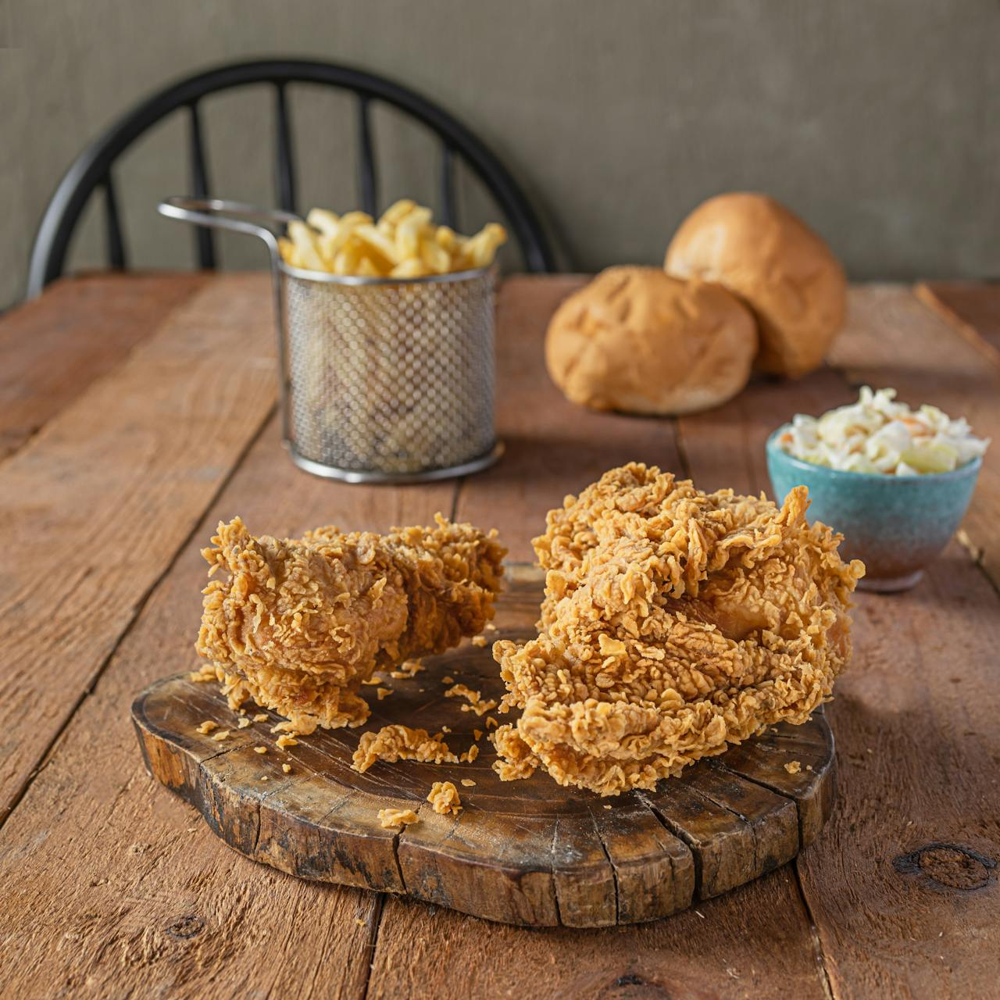

Pollo Apanado

Descripción
Delicioso pollo apanado con especias para los amantes de las frituras
Ingredientes
Rebozado
- 200g de pan rallado
- 150g de harina blanca
- 1 huevo
- 1 cucharada de ajo en polvo
- ½ cucharada de pimienta negra molida
- ½ cucharada de cebolla en polvo
- 1 cucharada de merkén
- ½ cuharada de orégano seco
- ½ cucharada de sal
Marinado
- ¾kg de filetillos de pollo
- 50 cc. de vino blanco
- ½ diente de ajo
- Sal
- 1 ají de color
Preparación
Rebozado
-
En un recipient mezcle la harina, el ajo en polvo, la pimienta, el merkén,
la cebolla en polvo, el orégano seco y la sal
- En un bowl grande vierta el pan rallado
Pollo Apanado
- Mezcle el vino blanco, la sal, el ajo y ají en un recipiente
- Vierta la mezcla en una bolsa y agregue los filetillos
- Dejelos marinar media hora
- Saque los filetillos de la bolsa y paselos por harina
- Luego pase los filetillos por huevo
- A continuación, apane los filetillos
- Fría el pollo en aceite suficiente a 180ºC durante 5 minutos
Home